import matplotlib.pyplot as plt
import seaborn as sns
import numpy as np
import pandas as pd
from sklearn.linear_model import LinearRegression
from sklearn.preprocessing import PolynomialFeatures
from sklearn.neural_network import MLPRegressor
from sklearn.model_selection import train_test_split
from sklearn.pipeline import make_pipeline
from sklearn.base import BaseEstimator, TransformerMixin
from sklearn.linear_model import Ridge
from sklearn.preprocessing import StandardScaler
from sklearn.metrics import mean_squared_error
# Interactive widget
from ipywidgets import interact
# Retina mode
%config InlineBackend.figure_format = 'retina'
%matplotlib inlineBasis Expansion in Linear Regression
ML
# Download CO2 data from NOAA
url = 'https://gml.noaa.gov/webdata/ccgg/trends/co2/co2_mm_mlo.csv'
names = 'year,month,decimal date,average,deseasonalized,ndays,sdev,unc'.split(',')
# no index
df = pd.read_csv(url, skiprows=72, names=names, index_col=False)df| year | month | decimal date | average | deseasonalized | ndays | sdev | unc | |
|---|---|---|---|---|---|---|---|---|
| 0 | 1960 | 10 | 1960.7896 | 313.83 | 316.85 | -1 | -9.99 | -0.99 |
| 1 | 1960 | 11 | 1960.8743 | 315.00 | 316.89 | -1 | -9.99 | -0.99 |
| 2 | 1960 | 12 | 1960.9563 | 316.19 | 316.96 | -1 | -9.99 | -0.99 |
| 3 | 1961 | 1 | 1961.0411 | 316.89 | 316.84 | -1 | -9.99 | -0.99 |
| 4 | 1961 | 2 | 1961.1260 | 317.70 | 317.05 | -1 | -9.99 | -0.99 |
| ... | ... | ... | ... | ... | ... | ... | ... | ... |
| 761 | 2024 | 3 | 2024.2083 | 425.38 | 423.92 | 22 | 0.99 | 0.40 |
| 762 | 2024 | 4 | 2024.2917 | 426.57 | 424.03 | 24 | 0.98 | 0.38 |
| 763 | 2024 | 5 | 2024.3750 | 426.90 | 423.61 | 29 | 0.76 | 0.27 |
| 764 | 2024 | 6 | 2024.4583 | 426.91 | 424.44 | 20 | 0.65 | 0.28 |
| 765 | 2024 | 7 | 2024.5417 | 425.55 | 425.10 | 24 | 0.69 | 0.27 |
766 rows × 8 columns
df.index = pd.to_datetime(df[['year', 'month']].apply(lambda x: '{}-{}'.format(x[0], x[1]), axis=1))df.average.plot(figsize=(6, 4), title='CO2 Levels at Mauna Loa Observatory')
plt.xlabel('Year')
plt.ylabel('CO2 Level')Text(0, 0.5, 'CO2 Level')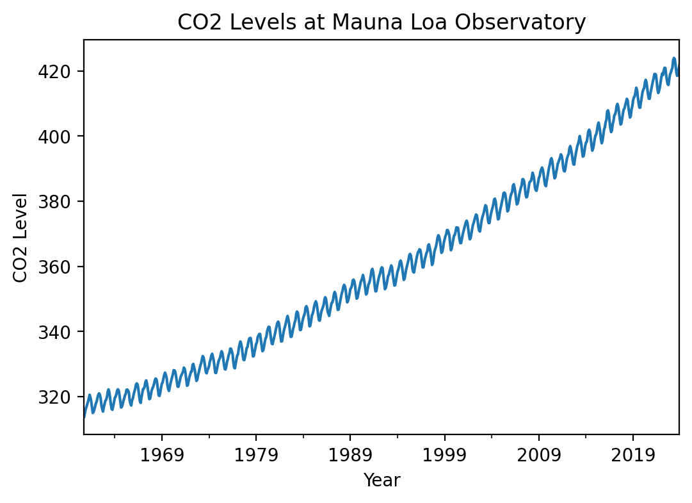
# Create X and y
# X = months since first measurement
X = np.array(range(len(df)))
y = df.average.valuesplt.plot(X, y)
plt.xlabel('Months since first measurement')
plt.ylabel('CO2 Level')Text(0, 0.5, 'CO2 Level')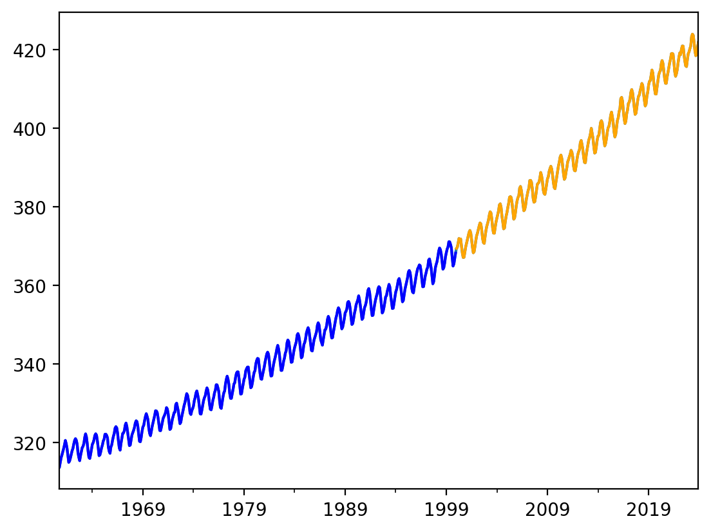
# Normalize X and y
s1 = StandardScaler()
s2 = StandardScaler()
X_norm = s1.fit_transform(X.reshape(-1, 1))
y_norm = s2.fit_transform(y.reshape(-1, 1))X_norm.mean(), X_norm.std()(0.0, 0.9999999999999999)df = pd.DataFrame({"x":X.flatten(), "transformed":X_norm.flatten()})
df| x | transformed | |
|---|---|---|
| 0 | 0 | -1.729791 |
| 1 | 1 | -1.725269 |
| 2 | 2 | -1.720746 |
| 3 | 3 | -1.716224 |
| 4 | 4 | -1.711702 |
| ... | ... | ... |
| 761 | 761 | 1.711702 |
| 762 | 762 | 1.716224 |
| 763 | 763 | 1.720746 |
| 764 | 764 | 1.725269 |
| 765 | 765 | 1.729791 |
766 rows × 2 columns
df["re-transformed"] = s1.inverse_transform(df["transformed"].values.reshape(-1, 1))
df| x | transformed | re-transformed | |
|---|---|---|---|
| 0 | 0 | -1.729791 | 0.0 |
| 1 | 1 | -1.725269 | 1.0 |
| 2 | 2 | -1.720746 | 2.0 |
| 3 | 3 | -1.716224 | 3.0 |
| 4 | 4 | -1.711702 | 4.0 |
| ... | ... | ... | ... |
| 761 | 761 | 1.711702 | 761.0 |
| 762 | 762 | 1.716224 | 762.0 |
| 763 | 763 | 1.720746 | 763.0 |
| 764 | 764 | 1.725269 | 764.0 |
| 765 | 765 | 1.729791 | 765.0 |
766 rows × 3 columns
df.mean()x 382.5
transformed 0.0
re-transformed 382.5
dtype: float64df.std()x 221.269444
transformed 1.000653
re-transformed 221.269444
dtype: float64x_test = np.array([800])
s1.transform(x_test.reshape(-1, 1))array([[1.88807266]])y_norm.mean(), y_norm.std()(-2.003619202665557e-15, 0.9999999999999998)plt.plot(X_norm, y_norm)
plt.xlabel('(Normalized) Months since first measurement')
plt.ylabel('(Normalized) CO2 Level')Text(0, 0.5, '(Normalized) CO2 Level')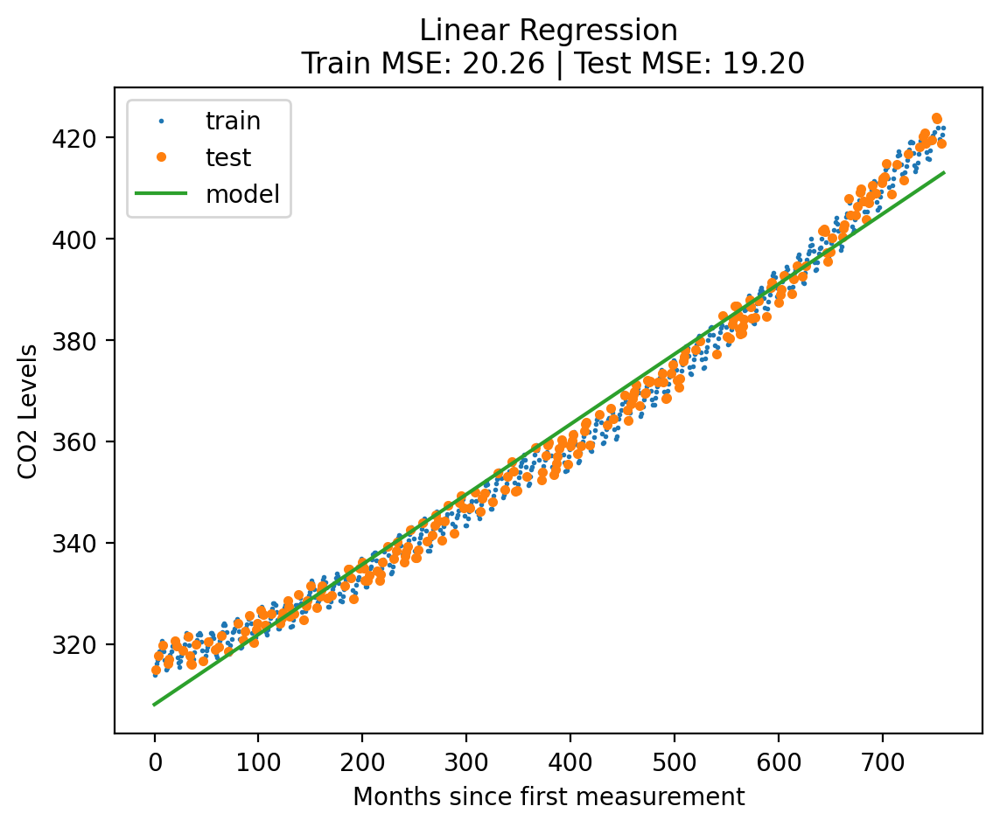
Task 1: Interpolation
np.random.seed(42)
train_idx = np.random.choice(range(len(X_norm)), size=int(len(X_norm) * 0.7), replace=False)
test_idx = list(set(range(len(X_norm))) - set(train_idx))
X_train = X[train_idx]
y_train = y[train_idx]
X_test = X[test_idx]
y_test = y[test_idx]
X_norm_train = X_norm[train_idx]
y_norm_train = y_norm[train_idx]
X_norm_test = X_norm[test_idx]
y_norm_test = y_norm[test_idx]plt.plot(X_norm_train, y_norm_train, 'o', label='train',markersize=1)
plt.plot(X_norm_test, y_norm_test, 'o', label='test', ms=3)
plt.xlabel('(Normalized) Months since first measurement')
plt.ylabel('(Normalized) CO2 Level')
plt.legend()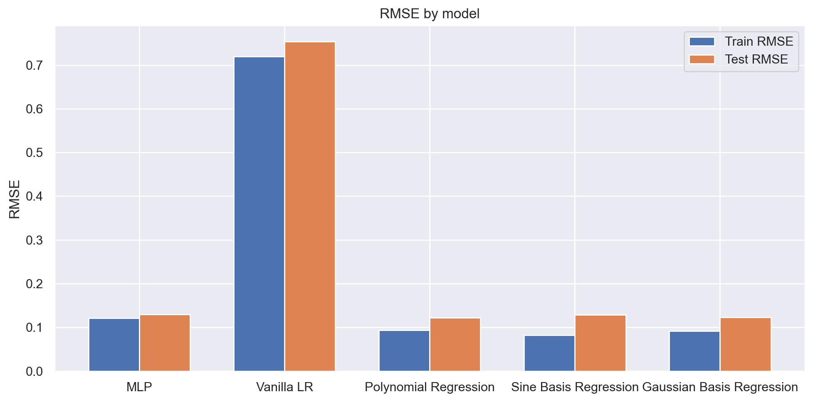
errors= {}
X_lin_1d = np.linspace(X_norm.min(), X_norm.max(), 100).reshape(-1, 1)Model 1: Vanilla Linear Regression
def plot_fit_predict(model, X_norm_train, y_norm_train, X_norm_test, y_norm_test, X_lin, title, plot=True):
model.fit(X_norm_train, y_norm_train)
y_hat_train = model.predict(X_norm_train).reshape(-1, 1)
y_hat_test = model.predict(X_norm_test).reshape(-1, 1)
# Transform back to original scale
y_hat_train = s2.inverse_transform(y_hat_train)
y_hat_test = s2.inverse_transform(y_hat_test)
y_hat_lin = s2.inverse_transform(model.predict(X_lin).reshape(-1, 1))
errors[title] = {"train": mean_squared_error(y_train, y_hat_train),
"test": mean_squared_error(y_test, y_hat_test)}
if plot:
plt.plot(X_train, y_train, 'o', label='train', markersize=1)
plt.plot(X_test, y_test, 'o', label='test', ms=3)
plt.plot(s1.inverse_transform(X_lin_1d), y_hat_lin, label='model')
plt.xlabel('Months since first measurement')
plt.ylabel('CO2 Levels')
plt.legend()
plt.title('{}\n Train MSE: {:.2f} | Test MSE: {:.2f}'.format(title, errors[title]["train"], errors[title]["test"]))
return errors[title]model = LinearRegression()
plot_fit_predict(model, X_norm_train, y_norm_train, X_norm_test, y_norm_test, X_lin_1d, "Linear Regression"){'train': 22.02534268790436, 'test': 18.72254862852729}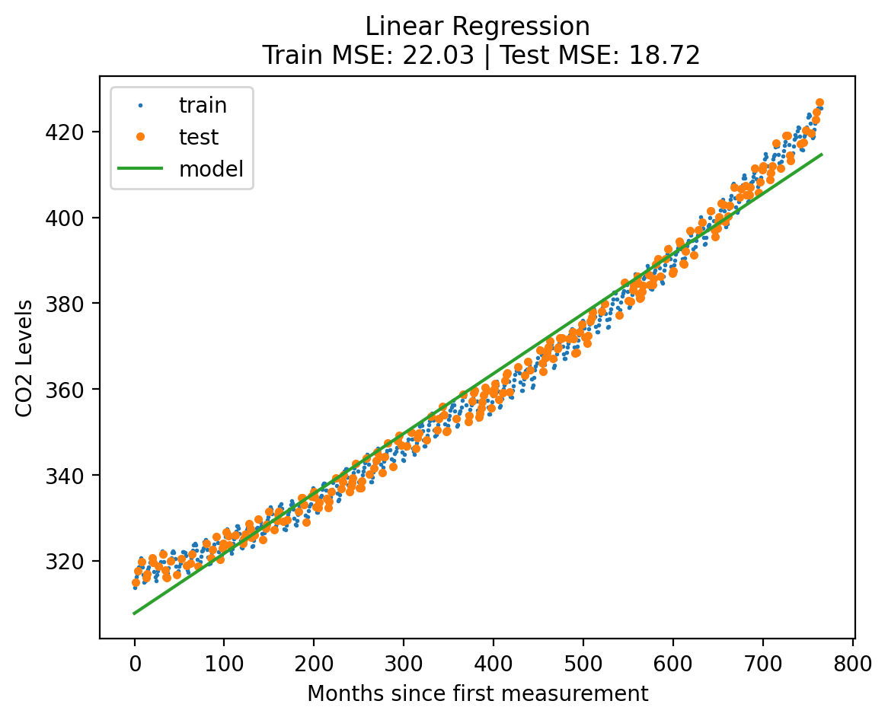
MLP
# use sk-learn for MLP
mlp_model = MLPRegressor(hidden_layer_sizes=[128, 256, 512, 256, 128], max_iter = 10000)
plot_fit_predict(mlp_model, X_norm_train, y_norm_train, X_norm_test, y_norm_test, X_lin_1d, "MLP Regression")/Users/nipun/mambaforge/lib/python3.10/site-packages/sklearn/neural_network/_multilayer_perceptron.py:1624: DataConversionWarning: A column-vector y was passed when a 1d array was expected. Please change the shape of y to (n_samples, ), for example using ravel().
y = column_or_1d(y, warn=True){'train': 5.935971669202183, 'test': 6.511128786459153}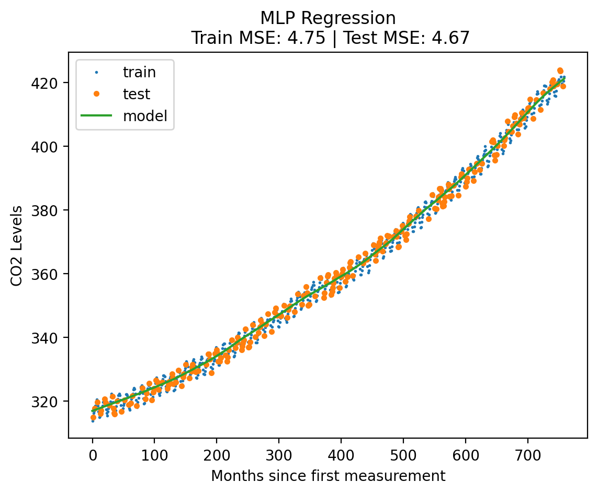
Polynomial Regression of degree “d”
def create_poly_features(X, d):
"""
X is (N, 1) array
d is degree of polynomial
returns normalized polynomial features of X
"""
X_poly = np.zeros((len(X), d))
X_poly[:, 0] = X[:, 0]
for i in range(1, d):
X_poly[:, i] = X[:, 0] ** (i + 1)
# Normalize each column
X_poly = StandardScaler().fit_transform(X_poly)
return X_polyxs = np.linspace(-5, 5, 50).reshape(-1, 1)
poly_f = create_poly_features(xs, 4)
for i in range(4):
plt.plot(xs, poly_f[:, i], label='x^{}'.format(i+1))
plt.legend()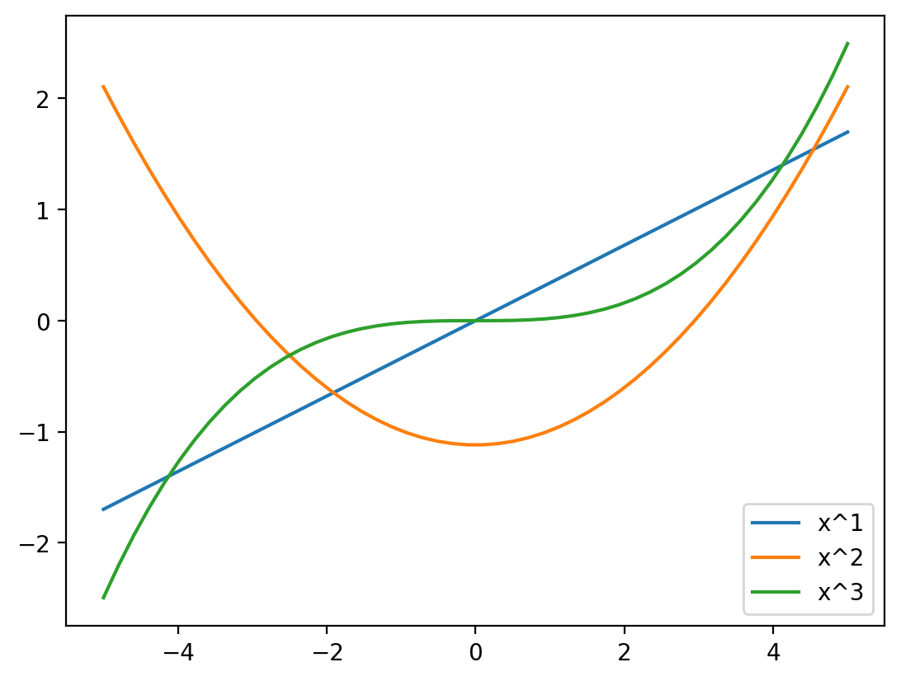
def show_poly_features(degree):
X_poly = create_poly_features(X_norm, degree)
plt.plot(X_norm, X_poly)
plt.xlabel('X')
plt.ylabel('Polynomial Features')
plt.title('Degree {}'.format(degree))
show_poly_features(2)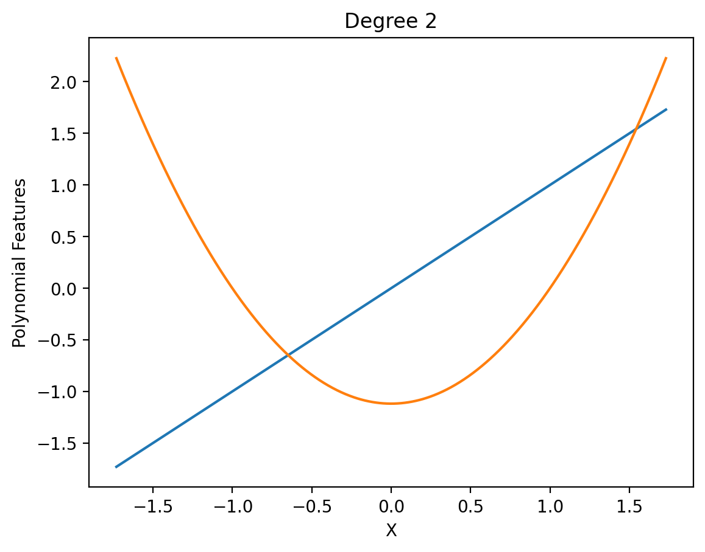
interact(show_poly_features, degree=(1, 10, 1))<function __main__.show_poly_features(degree)>model2 = LinearRegression()
degree = 4
Xf_norm_train = create_poly_features(X_norm_train.reshape(-1, 1), degree)
Xf_norm_test = create_poly_features(X_norm_test.reshape(-1, 1), degree)
X_lin_poly = create_poly_features(X_lin_1d, degree)
plot_fit_predict(model2, Xf_norm_train, y_norm_train, Xf_norm_test, y_norm_test, X_lin_poly, f"Polynomial Regression (d={degree})"){'train': 4.911310087864347, 'test': 6.6713097074692875}
model2.coef_, model2.intercept_(array([[0.97361847, 0.09894695, 0.02772375, 0.03416679]]),
array([-0.00901074]))X_lin_poly.shape(100, 4)X_lin_poly.shape(100, 4)model2.coef_.shape(1, 4)X_lin_1d.shape(100, 1)plt.plot(X_lin_1d, model2.intercept_.repeat(len(X_lin_1d)), label='Degree 0')
plt.plot(X_lin_1d, X_lin_poly[:, 0:1]@model2.coef_[:, 0], label='Degree 1')
plt.plot(X_lin_1d, X_lin_poly[:, 1:2]@model2.coef_[:, 1], label='Degree 2')
plt.plot(X_lin_1d, X_lin_poly[:, 2:3]@model2.coef_[:, 2], label='Degree 3')
plt.plot(X_lin_1d, X_lin_poly[:, 3:4]@model2.coef_[:, 3], label='Degree 4')
plt.legend()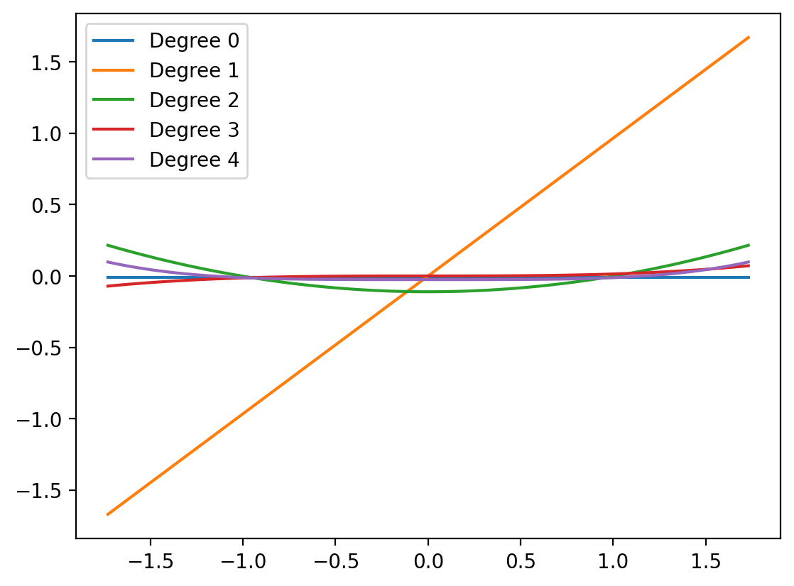
def show_additive(model, X_lin_1d, max_degree):
ys = model.intercept_.repeat(len(X_lin_1d))
#plt.fill_between(X_lin_1d.squeeze(), s2.inverse_transform(ys.reshape(-1, 1)).squeeze(), alpha=0.1)
print(ys.shape, X_lin_1d.shape)
label = '{:0.2f}x'.format(model.intercept_[0])
for i in range(1, max_degree + 1):
yd = X_lin_poly[:, i-1:i]@model.coef_[:, i-1]
ys = ys + yd
label += ' + {:0.2f} x^{}'.format(model.coef_[:, i-1][0], i)
ys = s2.inverse_transform(ys.reshape(-1, 1))
plt.plot(X_lin_1d, ys, label = label)
plt.plot(X_norm_train, y_train, 'o', label='train', markersize=1)
plt.legend()
show_additive(model2, X_lin_1d, 3)(100,) (100, 1)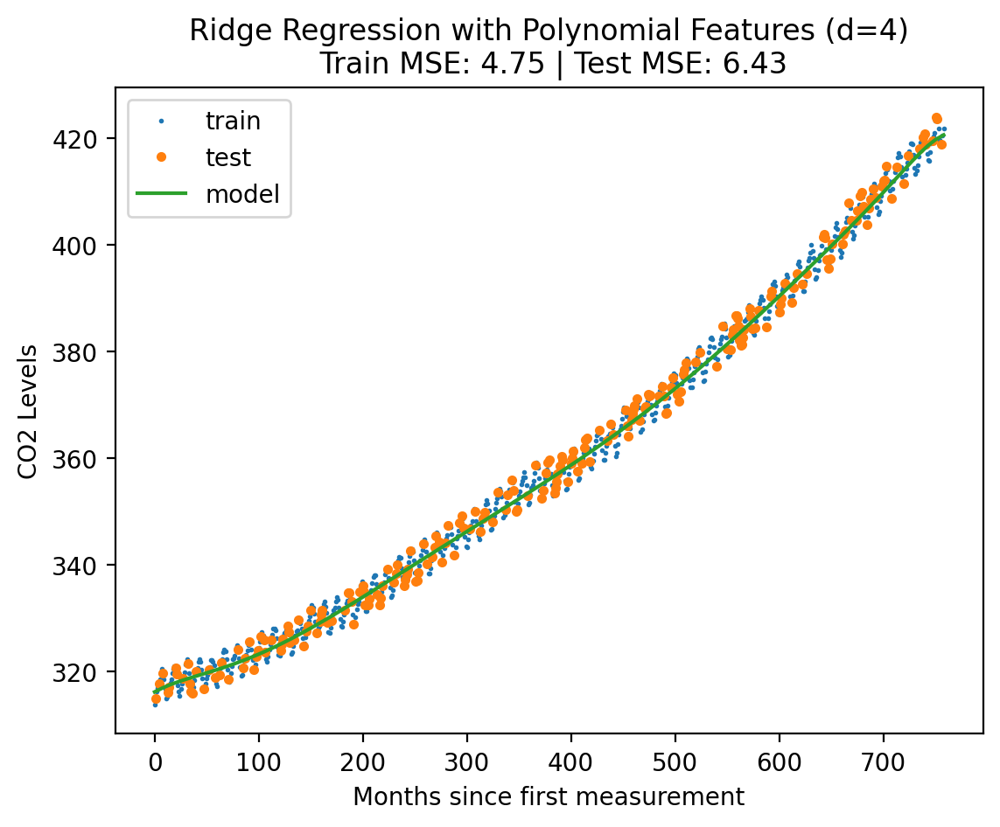
from ipywidgets import interact, fixed
m = model2
interact(show_additive, model=fixed(m), X_lin_1d=fixed(X_lin_1d), max_degree=(1, len(m.coef_[0]), 1))<function __main__.show_additive(model, X_lin_1d, max_degree)>for degree in range(1, 10):
Xf_norm_train = create_poly_features(X_norm_train.reshape(-1, 1), degree)
Xf_norm_test = create_poly_features(X_norm_test.reshape(-1, 1), degree)
X_lin_poly = create_poly_features(X_lin_1d, degree)
plot_fit_predict(model2, Xf_norm_train, y_norm_train, Xf_norm_test, y_norm_test, X_lin_poly, f"Polynomial Regression (d={degree})", plot=False)errors_df = pd.DataFrame(errors).T
errors_df| train | test | |
|---|---|---|
| Linear Regression | 22.025343 | 18.722549 |
| MLP Regression | 5.935972 | 6.511129 |
| Polynomial Regression (d=4) | 4.911310 | 6.671310 |
| Polynomial Regression (d=1) | 22.025343 | 20.401004 |
| Polynomial Regression (d=2) | 5.120285 | 6.983209 |
| Polynomial Regression (d=3) | 5.001988 | 6.904987 |
| Polynomial Regression (d=5) | 4.802187 | 6.752464 |
| Polynomial Regression (d=6) | 4.800177 | 6.755818 |
| Polynomial Regression (d=7) | 4.741101 | 6.819747 |
| Polynomial Regression (d=8) | 4.735053 | 6.846223 |
| Polynomial Regression (d=9) | 4.710354 | 6.859936 |
| 1 | 22.025343 | 20.401004 |
| 2 | 5.120285 | 6.983209 |
| 3 | 5.001988 | 6.904987 |
| 4 | 4.911310 | 6.671310 |
| 5 | 4.802187 | 6.752464 |
| 6 | 4.800177 | 6.755818 |
| 7 | 4.741101 | 6.819747 |
| 8 | 4.735053 | 6.846223 |
| 9 | 4.710354 | 6.859936 |
| 10 | 4.704567 | 6.857088 |
| 11 | 4.592348 | 6.814545 |
| 12 | 4.586188 | 6.859695 |
| 13 | 4.586165 | 6.858467 |
| 14 | 4.584720 | 6.872560 |
| 15 | 4.579522 | 6.854161 |
| 16 | 4.577088 | 6.856695 |
| 17 | 4.577062 | 6.857773 |
| 18 | 4.576811 | 6.862393 |
| 19 | 4.536762 | 6.881145 |
errors_df.plot(kind='bar', figsize=(12, 6), title='MSE for Train and Test Sets')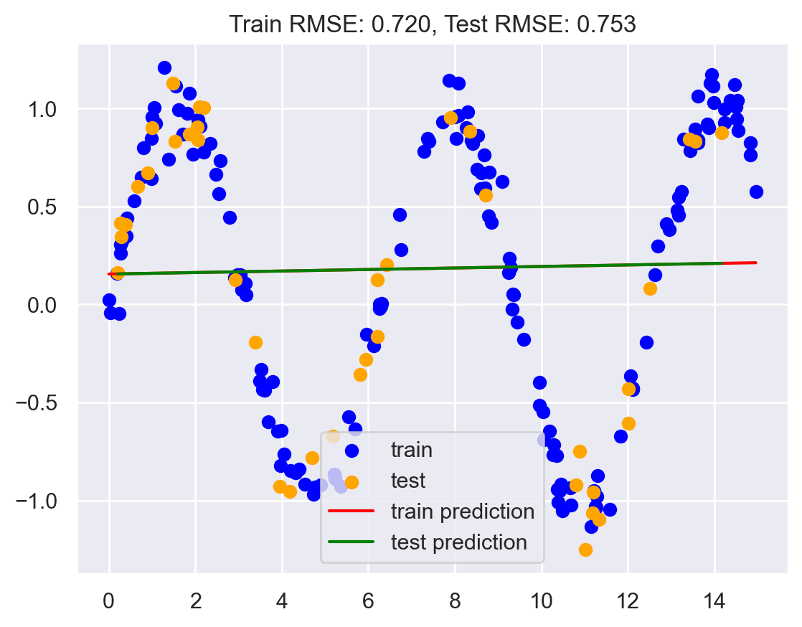
# bias variance tradeoff
errors_poly = {}
for degree in range(1, 20):
Xf_norm_train = create_poly_features(X_norm_train.reshape(-1, 1), degree)
Xf_norm_test = create_poly_features(X_norm_test.reshape(-1, 1), degree)
X_lin_poly = create_poly_features(X_lin_1d, degree)
plot_fit_predict(model2, Xf_norm_train, y_norm_train, Xf_norm_test, y_norm_test, X_lin_poly, degree, plot=False)
# geting errors for polynomial regression only for plotting
errors_poly[degree] = errors[degree]errors_poly_df = pd.DataFrame(errors_poly).T
best_degree = np.argmin(errors_poly_df.test) + 1
min_error = errors_poly_df.test[best_degree - 1] # index of df = degree - 1
print(f"Best degree: {best_degree}, Min error: {min_error}")
# set figure size
plt.figure(figsize=(12, 6))
plt.plot(errors_poly_df.index.values, errors_poly_df.train.values, label='train')
plt.plot(errors_poly_df.index.values, errors_poly_df.test.values, label='test')
plt.axvline(best_degree, color='black', linestyle='--', label='best degree')
plt.xticks(np.arange(min(errors_poly_df.index), max(errors_poly_df.index)+1, 1.0))
plt.ylim(4.5, 7.5) # set y limit - to show the difference between train and test clearly
plt.xlabel('Degree')
plt.ylabel('MSE')
plt.title('Bias-Variance Tradeoff')
plt.legend()
plt.show()Best degree: 4, Min error: 6.904987394528579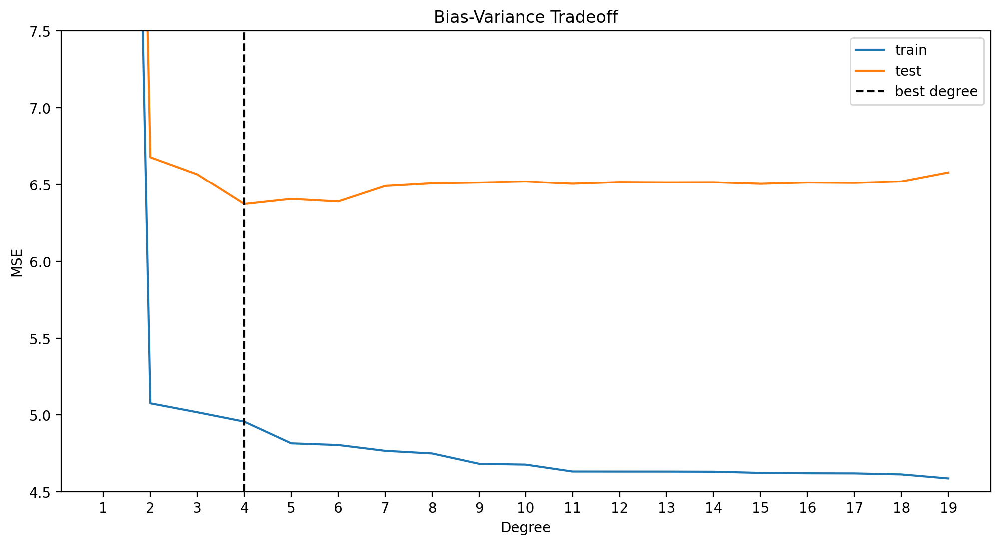
Ridge Regression with polynomial basis
# initiate ridge regression model
model_ridge = Ridge(alpha=0.3)
errors_ridge = {}
for degree in range(1, 20):
Xf_norm_train = create_poly_features(X_norm_train.reshape(-1, 1), degree)
Xf_norm_test = create_poly_features(X_norm_test.reshape(-1, 1), degree)
X_lin_poly = create_poly_features(X_lin_1d, degree)
plot_fit_predict(model_ridge, Xf_norm_train, y_norm_train, Xf_norm_test, y_norm_test, X_lin_poly, f'ridge_{degree}', plot=False)
# geting errors for polynomial regression only for plotting
errors_ridge[degree] = errors[f'ridge_{degree}']errors_ridge_df = pd.DataFrame(errors_ridge).T
best_degree_ridge = np.argmin(errors_ridge_df.test) + 1
min_error = errors_ridge_df.test[best_degree_ridge - 1] # index of df = degree - 1
print(f"Best degree: {best_degree_ridge}, Min error: {min_error}")
# set figure size
plt.figure(figsize=(12, 6))
plt.plot(errors_ridge_df.index.values, errors_ridge_df.train.values, label='train')
plt.plot(errors_ridge_df.index.values, errors_ridge_df.test.values, label='test')
plt.axvline(best_degree_ridge, color='black', linestyle='--', label='best degree')
plt.xticks(np.arange(min(errors_ridge_df.index), max(errors_ridge_df.index)+1, 1.0))
plt.ylim(4.5, 7.5) # set y limit - to show the difference between train and test clearly
plt.xlabel('Degree')
plt.ylabel('MSE')
plt.title('Bias-Variance Tradeoff')
plt.legend()
plt.show()Best degree: 4, Min error: 6.535907094411071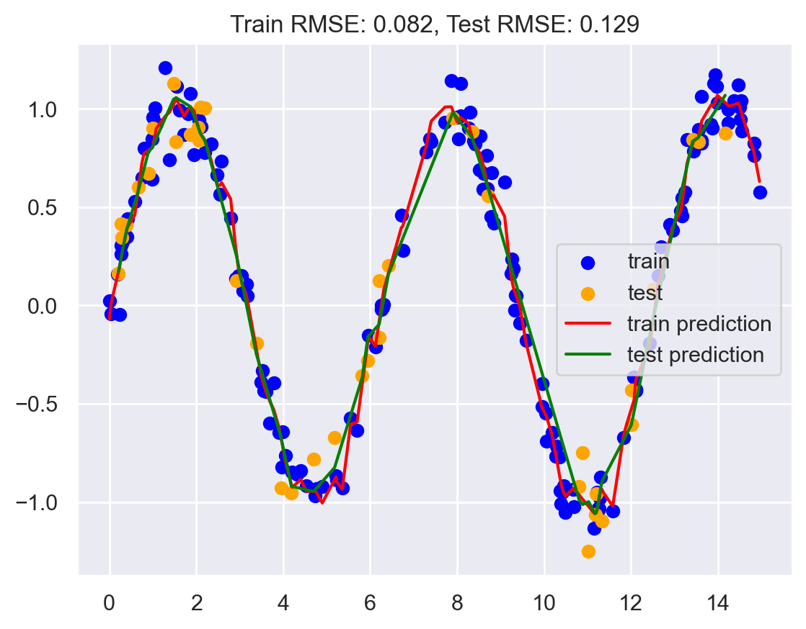
plot_fit_predict(model_ridge, Xf_norm_train, y_norm_train, Xf_norm_test, y_norm_test, X_lin_poly, f"Ridge Regression with Polynomial Features (d={best_degree_ridge})", plot=True){'train': 4.767435271070607, 'test': 6.39886853568042}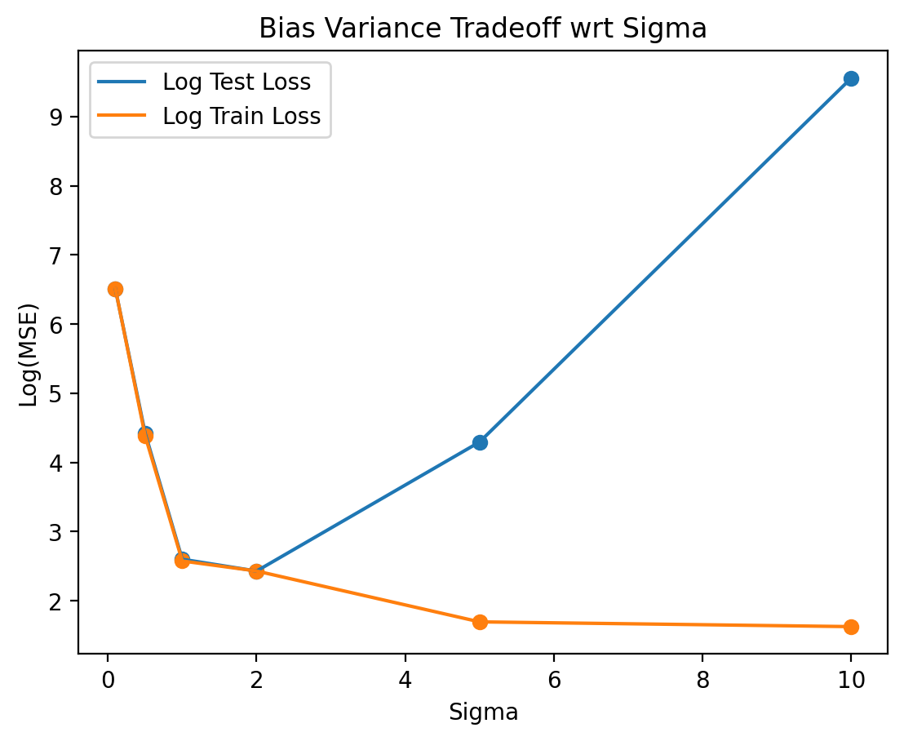
Gausian Basis Function
def create_guassian_basis(X , d , std = 1):
"""
X is (N, 1) array
d is number of basis functions
"""
means = np.linspace(X.min(), X.max(), d)
X = np.repeat(X, d, axis=1)
means = np.repeat(means.reshape(-1, 1), len(X), axis=1).T
return np.exp(-(X - means) ** 2 / (2 * std ** 2))def show_gaussian_basis(d, stdev):
xs = np.linspace(-5, 5, 100).reshape(-1, 1)
X_gauss = create_guassian_basis(xs, d, std=stdev)
plt.plot(xs, X_gauss)
plt.xlabel('X')
plt.ylabel('Gaussian Basis')
plt.title('Degree {} \nStddev {}'.format(d, stdev))
plt.ylim(0, 1)
show_gaussian_basis(4, 1)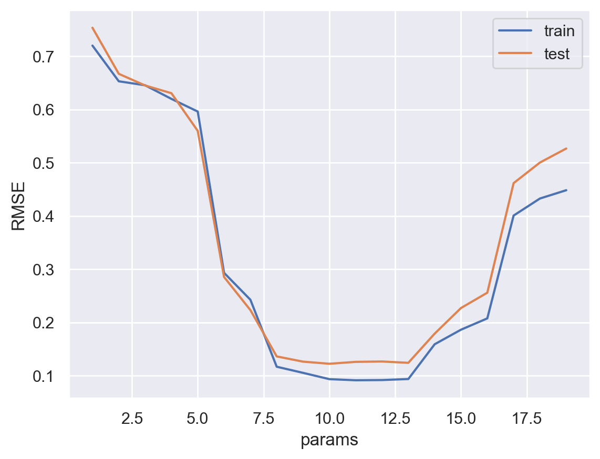
interact(show_gaussian_basis, d=(1, 10, 1), stdev=(0.1, 20, 0.1))<function __main__.show_gaussian_basis(d, stdev)>model_gauss = LinearRegression()
degree = 4
Xf_norm_train = create_guassian_basis(X_norm_train.reshape(-1, 1), degree)
Xf_norm_test = create_guassian_basis(X_norm_test.reshape(-1, 1), degree)
X_lin_poly = create_guassian_basis(X_lin_1d, degree)
plot_fit_predict(model2, Xf_norm_train, y_norm_train, Xf_norm_test, y_norm_test, X_lin_poly, f"Gaussian Basis Linear Regression (d={degree})"){'train': 5.390651367676581, 'test': 5.618947635873222}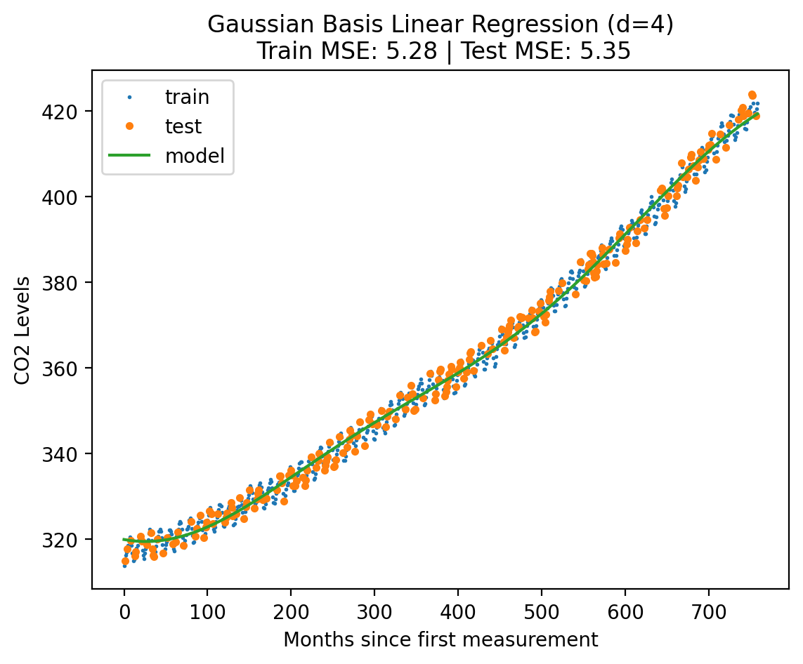
errors.clear()for degree in range(3, 7):
Xf_norm_train = create_guassian_basis(X_norm_train.reshape(-1, 1), degree)
Xf_norm_test = create_guassian_basis(X_norm_test.reshape(-1, 1), degree)
X_lin_poly = create_guassian_basis(X_lin_1d, degree)
plot_fit_predict(model2, Xf_norm_train, y_norm_train, Xf_norm_test, y_norm_test, X_lin_poly, f"Gaussian Basis Linear Regression (d={degree})", plot=False)errors_df = pd.DataFrame(errors).Terrors_df.plot(kind='bar', figsize=(12, 6), title='MSE for Train and Test Sets')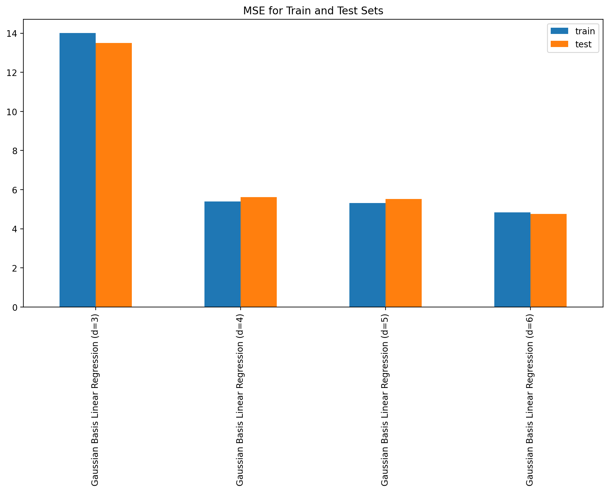
errors.clear()# Bias Variance Tradeoff wrt Sigma
num_gaussians = 3
for std in [0.1, 0.5, 1, 2, 5, 10]:
Xf_norm_train = create_guassian_basis(X_norm_train.reshape(-1, 1), num_gaussians, std)
Xf_norm_test = create_guassian_basis(X_norm_test.reshape(-1, 1), num_gaussians, std)
X_lin_poly = create_guassian_basis(X_lin_1d, num_gaussians, std)
plot_fit_predict(model2, Xf_norm_train, y_norm_train, Xf_norm_test, y_norm_test, X_lin_poly, f"Gaussian Basis Linear Regression (d=3, std={std})", plot=False)# Plot the train and test errors for different values of sigma
errors_df = pd.DataFrame(errors).T
test_errors = errors_df.test.values
train_errors = errors_df.train.values
log_test_errors = np.log(test_errors)
log_train_errors = np.log(train_errors)
stds = [0.1, 0.5, 1, 2, 5, 10]
plt.plot(stds , log_test_errors, label='Log Test Loss')
plt.plot(stds , log_train_errors, label='Log Train Loss')
plt.scatter(stds, log_test_errors)
plt.scatter(stds, log_train_errors)
plt.legend()
plt.xlabel('Sigma')
plt.ylabel('Log(MSE)')
plt.title('Bias Variance Tradeoff wrt Sigma')Text(0.5, 1.0, 'Bias Variance Tradeoff wrt Sigma')Gaussian Process
from sklearn.gaussian_process.kernels import RBF
from sklearn.gaussian_process.kernels import ExpSineSquared
from sklearn.gaussian_process.kernels import RationalQuadratic
from sklearn.gaussian_process.kernels import WhiteKernel
long_term_trend_kernel = 50.0**2 * RBF(length_scale=50.0)
seasonal_kernel = (
2.0**2
* RBF(length_scale=100.0)
* ExpSineSquared(length_scale=1.0, periodicity=1.0, periodicity_bounds="fixed")
)
irregularities_kernel = 0.5**2 * RationalQuadratic(length_scale=1.0, alpha=1.0)
noise_kernel = 0.1**2 * RBF(length_scale=0.1) + WhiteKernel(
noise_level=0.1**2, noise_level_bounds=(1e-5, 1e5)
)
co2_kernel = (
long_term_trend_kernel + seasonal_kernel + irregularities_kernel + noise_kernel
)
co2_kernel50**2 * RBF(length_scale=50) + 2**2 * RBF(length_scale=100) * ExpSineSquared(length_scale=1, periodicity=1) + 0.5**2 * RationalQuadratic(alpha=1, length_scale=1) + 0.1**2 * RBF(length_scale=0.1) + WhiteKernel(noise_level=0.01)# Using GP for the interpolation problem
from sklearn.gaussian_process import GaussianProcessRegressor
def plot_fit_gp(X_norm_train, y_norm_train, X_norm_test, y_norm_test, X_lin, title, plot=True):
gaussian_process = GaussianProcessRegressor(
kernel=co2_kernel,n_restarts_optimizer=9
)
gaussian_process.fit(X_norm_train, y_norm_train)
y_hat_train, std_prediction_train = gaussian_process.predict(X_norm_train, return_std=True)
y_hat_test , std_prediction_test = gaussian_process.predict(X_norm_test, return_std=True)
y_hat_train = y_hat_train.reshape(-1, 1)
y_hat_test = y_hat_test.reshape(-1, 1)
# Transform back to original scale
y_hat_train = s2.inverse_transform(y_hat_train)
y_hat_test = s2.inverse_transform(y_hat_test)
y_hat_lin , std_prediction_lin = gaussian_process.predict(X_lin , return_std=True)
y_hat_lin = y_hat_lin.reshape(-1, 1)
y_hat_lin = s2.inverse_transform(y_hat_lin)
errors[title] = {"train": mean_squared_error(y_train, y_hat_train),
"test": mean_squared_error(y_test, y_hat_test)}
if plot:
plt.plot(X_train, y_train, 'o', label='train',markersize=1)
plt.plot(X_test, y_test, 'o', label='test', ms=3)
plt.plot(s1.inverse_transform(X_lin_1d), y_hat_lin, label='model')
plt.fill_between(s1.inverse_transform(X_lin_1d).reshape(-1),
(y_hat_lin - 1.96*std_prediction_lin.reshape(-1,1)).reshape(-1),
(y_hat_lin + 1.96*std_prediction_lin.reshape(-1,1)).reshape(-1), alpha=0.5 , label='95% Confidence interval')
plt.xlabel('Months since first measurement')
plt.ylabel('CO2 Levels')
plt.legend()
plt.title('{}\n Train MSE: {:.2f} | Test MSE: {:.2f}'.format(title, errors[title]["train"], errors[title]["test"]))
return errors[title]plot_fit_gp(X_norm_train, y_norm_train, X_norm_test, y_norm_test, X_lin_1d, "Gaussian Process Regression")--------------------------------------------------------------------------- KeyboardInterrupt Traceback (most recent call last) Input In [58], in <module> ----> 1 plot_fit_gp(X_norm_train, y_norm_train, X_norm_test, y_norm_test, X_lin_1d, "Gaussian Process Regression") Input In [57], in plot_fit_gp(X_norm_train, y_norm_train, X_norm_test, y_norm_test, X_lin, title, plot) 5 def plot_fit_gp(X_norm_train, y_norm_train, X_norm_test, y_norm_test, X_lin, title, plot=True): 7 gaussian_process = GaussianProcessRegressor( 8 kernel=co2_kernel,n_restarts_optimizer=9 9 ) ---> 11 gaussian_process.fit(X_norm_train, y_norm_train) 13 y_hat_train, std_prediction_train = gaussian_process.predict(X_norm_train, return_std=True) 14 y_hat_test , std_prediction_test = gaussian_process.predict(X_norm_test, return_std=True) File ~/miniforge3/lib/python3.9/site-packages/sklearn/base.py:1152, in _fit_context.<locals>.decorator.<locals>.wrapper(estimator, *args, **kwargs) 1145 estimator._validate_params() 1147 with config_context( 1148 skip_parameter_validation=( 1149 prefer_skip_nested_validation or global_skip_validation 1150 ) 1151 ): -> 1152 return fit_method(estimator, *args, **kwargs) File ~/miniforge3/lib/python3.9/site-packages/sklearn/gaussian_process/_gpr.py:325, in GaussianProcessRegressor.fit(self, X, y) 322 for iteration in range(self.n_restarts_optimizer): 323 theta_initial = self._rng.uniform(bounds[:, 0], bounds[:, 1]) 324 optima.append( --> 325 self._constrained_optimization(obj_func, theta_initial, bounds) 326 ) 327 # Select result from run with minimal (negative) log-marginal 328 # likelihood 329 lml_values = list(map(itemgetter(1), optima)) File ~/miniforge3/lib/python3.9/site-packages/sklearn/gaussian_process/_gpr.py:656, in GaussianProcessRegressor._constrained_optimization(self, obj_func, initial_theta, bounds) 654 def _constrained_optimization(self, obj_func, initial_theta, bounds): 655 if self.optimizer == "fmin_l_bfgs_b": --> 656 opt_res = scipy.optimize.minimize( 657 obj_func, 658 initial_theta, 659 method="L-BFGS-B", 660 jac=True, 661 bounds=bounds, 662 ) 663 _check_optimize_result("lbfgs", opt_res) 664 theta_opt, func_min = opt_res.x, opt_res.fun File ~/miniforge3/lib/python3.9/site-packages/scipy/optimize/_minimize.py:710, in minimize(fun, x0, args, method, jac, hess, hessp, bounds, constraints, tol, callback, options) 707 res = _minimize_newtoncg(fun, x0, args, jac, hess, hessp, callback, 708 **options) 709 elif meth == 'l-bfgs-b': --> 710 res = _minimize_lbfgsb(fun, x0, args, jac, bounds, 711 callback=callback, **options) 712 elif meth == 'tnc': 713 res = _minimize_tnc(fun, x0, args, jac, bounds, callback=callback, 714 **options) File ~/miniforge3/lib/python3.9/site-packages/scipy/optimize/_lbfgsb_py.py:365, in _minimize_lbfgsb(fun, x0, args, jac, bounds, disp, maxcor, ftol, gtol, eps, maxfun, maxiter, iprint, callback, maxls, finite_diff_rel_step, **unknown_options) 359 task_str = task.tobytes() 360 if task_str.startswith(b'FG'): 361 # The minimization routine wants f and g at the current x. 362 # Note that interruptions due to maxfun are postponed 363 # until the completion of the current minimization iteration. 364 # Overwrite f and g: --> 365 f, g = func_and_grad(x) 366 elif task_str.startswith(b'NEW_X'): 367 # new iteration 368 n_iterations += 1 File ~/miniforge3/lib/python3.9/site-packages/scipy/optimize/_differentiable_functions.py:285, in ScalarFunction.fun_and_grad(self, x) 283 if not np.array_equal(x, self.x): 284 self._update_x_impl(x) --> 285 self._update_fun() 286 self._update_grad() 287 return self.f, self.g File ~/miniforge3/lib/python3.9/site-packages/scipy/optimize/_differentiable_functions.py:251, in ScalarFunction._update_fun(self) 249 def _update_fun(self): 250 if not self.f_updated: --> 251 self._update_fun_impl() 252 self.f_updated = True File ~/miniforge3/lib/python3.9/site-packages/scipy/optimize/_differentiable_functions.py:155, in ScalarFunction.__init__.<locals>.update_fun() 154 def update_fun(): --> 155 self.f = fun_wrapped(self.x) File ~/miniforge3/lib/python3.9/site-packages/scipy/optimize/_differentiable_functions.py:137, in ScalarFunction.__init__.<locals>.fun_wrapped(x) 133 self.nfev += 1 134 # Send a copy because the user may overwrite it. 135 # Overwriting results in undefined behaviour because 136 # fun(self.x) will change self.x, with the two no longer linked. --> 137 fx = fun(np.copy(x), *args) 138 # Make sure the function returns a true scalar 139 if not np.isscalar(fx): File ~/miniforge3/lib/python3.9/site-packages/scipy/optimize/_optimize.py:77, in MemoizeJac.__call__(self, x, *args) 75 def __call__(self, x, *args): 76 """ returns the function value """ ---> 77 self._compute_if_needed(x, *args) 78 return self._value File ~/miniforge3/lib/python3.9/site-packages/scipy/optimize/_optimize.py:71, in MemoizeJac._compute_if_needed(self, x, *args) 69 if not np.all(x == self.x) or self._value is None or self.jac is None: 70 self.x = np.asarray(x).copy() ---> 71 fg = self.fun(x, *args) 72 self.jac = fg[1] 73 self._value = fg[0] File ~/miniforge3/lib/python3.9/site-packages/sklearn/gaussian_process/_gpr.py:297, in GaussianProcessRegressor.fit.<locals>.obj_func(theta, eval_gradient) 295 def obj_func(theta, eval_gradient=True): 296 if eval_gradient: --> 297 lml, grad = self.log_marginal_likelihood( 298 theta, eval_gradient=True, clone_kernel=False 299 ) 300 return -lml, -grad 301 else: File ~/miniforge3/lib/python3.9/site-packages/sklearn/gaussian_process/_gpr.py:580, in GaussianProcessRegressor.log_marginal_likelihood(self, theta, eval_gradient, clone_kernel) 577 kernel.theta = theta 579 if eval_gradient: --> 580 K, K_gradient = kernel(self.X_train_, eval_gradient=True) 581 else: 582 K = kernel(self.X_train_) File ~/miniforge3/lib/python3.9/site-packages/sklearn/gaussian_process/kernels.py:841, in Sum.__call__(self, X, Y, eval_gradient) 813 """Return the kernel k(X, Y) and optionally its gradient. 814 815 Parameters (...) 838 is True. 839 """ 840 if eval_gradient: --> 841 K1, K1_gradient = self.k1(X, Y, eval_gradient=True) 842 K2, K2_gradient = self.k2(X, Y, eval_gradient=True) 843 return K1 + K2, np.dstack((K1_gradient, K2_gradient)) File ~/miniforge3/lib/python3.9/site-packages/sklearn/gaussian_process/kernels.py:842, in Sum.__call__(self, X, Y, eval_gradient) 840 if eval_gradient: 841 K1, K1_gradient = self.k1(X, Y, eval_gradient=True) --> 842 K2, K2_gradient = self.k2(X, Y, eval_gradient=True) 843 return K1 + K2, np.dstack((K1_gradient, K2_gradient)) 844 else: File ~/miniforge3/lib/python3.9/site-packages/sklearn/gaussian_process/kernels.py:940, in Product.__call__(self, X, Y, eval_gradient) 938 if eval_gradient: 939 K1, K1_gradient = self.k1(X, Y, eval_gradient=True) --> 940 K2, K2_gradient = self.k2(X, Y, eval_gradient=True) 941 return K1 * K2, np.dstack( 942 (K1_gradient * K2[:, :, np.newaxis], K2_gradient * K1[:, :, np.newaxis]) 943 ) 944 else: File ~/miniforge3/lib/python3.9/site-packages/sklearn/gaussian_process/kernels.py:1916, in RationalQuadratic.__call__(self, X, Y, eval_gradient) 1913 # gradient with respect to alpha 1914 if not self.hyperparameter_alpha.fixed: 1915 alpha_gradient = K * ( -> 1916 -self.alpha * np.log(base) 1917 + dists / (2 * self.length_scale**2 * base) 1918 ) 1919 alpha_gradient = alpha_gradient[:, :, np.newaxis] 1920 else: # alpha is kept fixed KeyboardInterrupt:
Fourier Features
Reference: https://bmild.github.io/fourfeat/
Fourier Feature Mapping
For every input x, we map it to a higher dimensional space using the following function:
\[\gamma(x) = [\cos(2\pi Bx), \sin(2\pi Bx)]^{T} \]
where \(B\) is a random Gaussian matrix, where each entry is drawn independently from a normal distribution N(0, \(σ^{2}\))
np.random.seed(42)
sigma = 5
NUM_features = 5
fs = sigma*np.random.randn(NUM_features)
print(fs)
for i in range(NUM_features):
plt.plot(X_norm, np.sin(fs[i]*X_norm), label=f'feature {i}-sin')
plt.plot(X_norm, np.cos(fs[i]*X_norm), label=f'feature {i}-cos')
plt.legend()
plt.title('Fourier Featurization of X manually')[ 2.48357077 -0.69132151 3.23844269 7.61514928 -1.17076687]Text(0.5, 1.0, 'Fourier Featurization of X manually')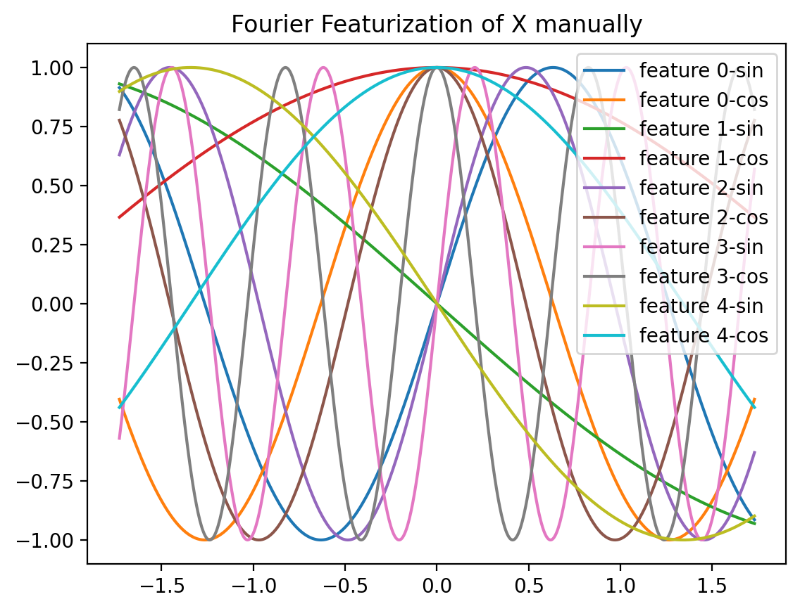
# Explicit implementation of RFF
def create_random_features(X, gamma, NUM_features):
"""
X is (N, 1) array
gamma is a scalar
NUM_features is a scalar
"""
X_rff = np.zeros((len(X), 2*NUM_features + 1))
X_rff[:, 0] = X[:, 0]
for i in range(NUM_features):
b = np.random.randn()
X_rff[:, i+1] = np.sin(2*np.pi*gamma*b*X[:, 0])
X_rff[:, i + NUM_features+1] = np.cos(2*np.pi*gamma*b*X[:, 0])
# Normalize each column
X_rff = StandardScaler().fit_transform(X_rff)
return X_rffSklearn Implementation
# Sklearn's implementation of RFF
from sklearn.kernel_approximation import RBFSampler
RBFSampler?Init signature: RBFSampler(*, gamma=1.0, n_components=100, random_state=None)
Docstring:
Approximate a RBF kernel feature map using random Fourier features.
It implements a variant of Random Kitchen Sinks.[1]
Read more in the :ref:`User Guide <rbf_kernel_approx>`.
Parameters
----------
gamma : 'scale' or float, default=1.0
Parameter of RBF kernel: exp(-gamma * x^2).
If ``gamma='scale'`` is passed then it uses
1 / (n_features * X.var()) as value of gamma.
.. versionadded:: 1.2
The option `"scale"` was added in 1.2.
n_components : int, default=100
Number of Monte Carlo samples per original feature.
Equals the dimensionality of the computed feature space.
random_state : int, RandomState instance or None, default=None
Pseudo-random number generator to control the generation of the random
weights and random offset when fitting the training data.
Pass an int for reproducible output across multiple function calls.
See :term:`Glossary <random_state>`.
Attributes
----------
random_offset_ : ndarray of shape (n_components,), dtype={np.float64, np.float32}
Random offset used to compute the projection in the `n_components`
dimensions of the feature space.
random_weights_ : ndarray of shape (n_features, n_components), dtype={np.float64, np.float32}
Random projection directions drawn from the Fourier transform
of the RBF kernel.
n_features_in_ : int
Number of features seen during :term:`fit`.
.. versionadded:: 0.24
feature_names_in_ : ndarray of shape (`n_features_in_`,)
Names of features seen during :term:`fit`. Defined only when `X`
has feature names that are all strings.
.. versionadded:: 1.0
See Also
--------
AdditiveChi2Sampler : Approximate feature map for additive chi2 kernel.
Nystroem : Approximate a kernel map using a subset of the training data.
PolynomialCountSketch : Polynomial kernel approximation via Tensor Sketch.
SkewedChi2Sampler : Approximate feature map for
"skewed chi-squared" kernel.
sklearn.metrics.pairwise.kernel_metrics : List of built-in kernels.
Notes
-----
See "Random Features for Large-Scale Kernel Machines" by A. Rahimi and
Benjamin Recht.
[1] "Weighted Sums of Random Kitchen Sinks: Replacing
minimization with randomization in learning" by A. Rahimi and
Benjamin Recht.
(https://people.eecs.berkeley.edu/~brecht/papers/08.rah.rec.nips.pdf)
Examples
--------
>>> from sklearn.kernel_approximation import RBFSampler
>>> from sklearn.linear_model import SGDClassifier
>>> X = [[0, 0], [1, 1], [1, 0], [0, 1]]
>>> y = [0, 0, 1, 1]
>>> rbf_feature = RBFSampler(gamma=1, random_state=1)
>>> X_features = rbf_feature.fit_transform(X)
>>> clf = SGDClassifier(max_iter=5, tol=1e-3)
>>> clf.fit(X_features, y)
SGDClassifier(max_iter=5)
>>> clf.score(X_features, y)
1.0
File: ~/mambaforge/lib/python3.10/site-packages/sklearn/kernel_approximation.py
Type: type
Subclasses: r= RBFSampler(n_components=5)
plt.plot(X_norm, r.fit_transform(X_norm.reshape(-1,1)))
plt.title('Fourier Featurization using RBFSampler (sklearn)')Text(0.5, 1.0, 'Fourier Featurization using RBFSampler (sklearn)')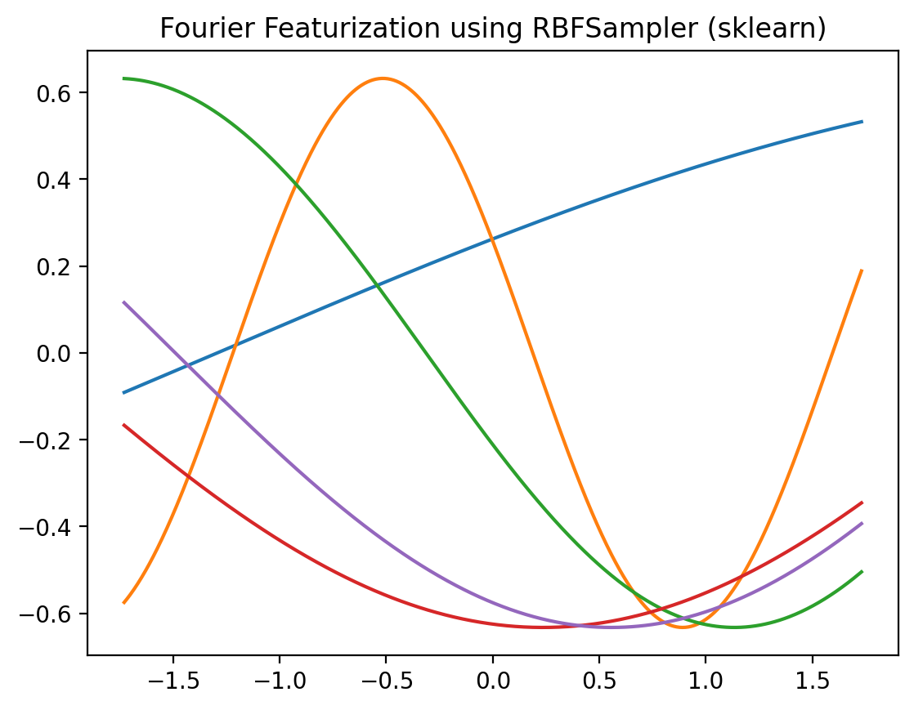
r = RBFSampler(n_components=4, gamma=0.1)
plt.plot(X_norm, r.fit_transform(X_norm.reshape(-1,1)))
plt.title('Fourier Featurization using RBFSampler (sklearn)')Text(0.5, 1.0, 'Fourier Featurization using RBFSampler (sklearn)')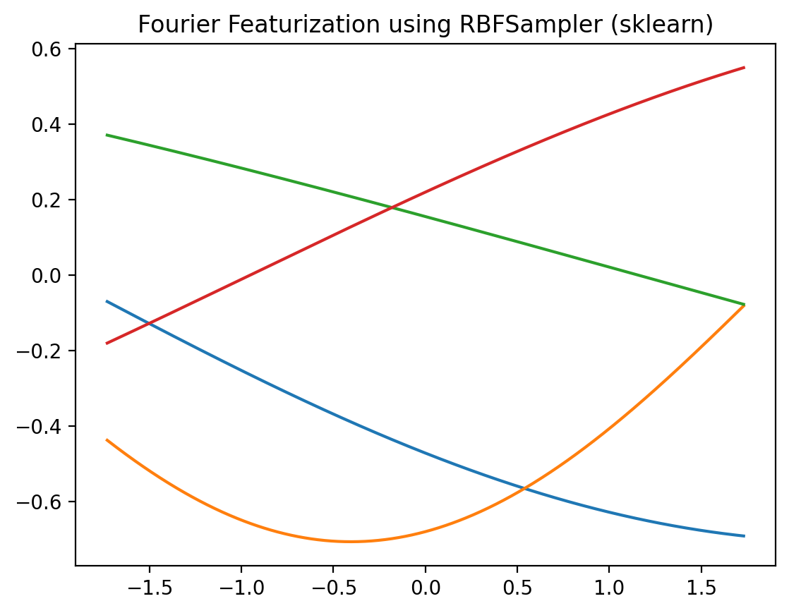
r = RBFSampler(n_components=4, gamma=20)
plt.plot(X_norm, r.fit_transform(X_norm.reshape(-1,1)))
plt.title('Fourier Featurization using RBFSampler (sklearn)')Text(0.5, 1.0, 'Fourier Featurization using RBFSampler (sklearn)')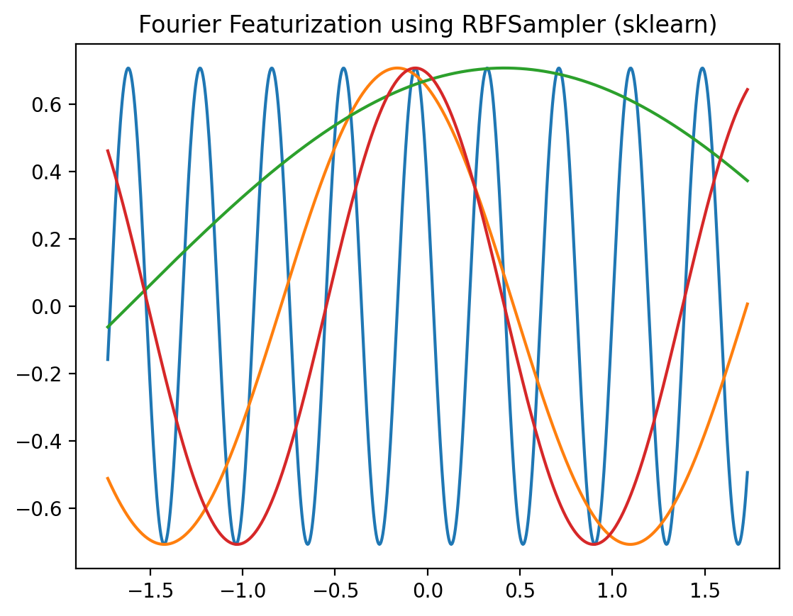
# Implicit implementation of RFF using sklearn
def create_rff(X, gamma, NUM_features):
# Random Fourier Features
# https://scikit-learn.org/stable/modules/generated/sklearn.kernel_approximation.RBFSampler.html
rbf_feature = RBFSampler(gamma=gamma, n_components=NUM_features, random_state=1)
X_features = rbf_feature.fit_transform(X)
return X_featuresmodel3 = LinearRegression()
gamma = 2.0
NUM_features = 10
Xf_norm_train = create_rff(X_norm_train.reshape(-1, 1), gamma, NUM_features)
Xf_norm_test = create_rff(X_norm_test.reshape(-1, 1), gamma, NUM_features)
X_lin_rff = create_rff(X_lin_1d, gamma, NUM_features)
plot_fit_predict(model3, Xf_norm_train, y_norm_train, Xf_norm_test, y_norm_test, X_lin_rff, f"Random Fourier Features (gamma={gamma}, NUM_features={NUM_features})"){'train': 4.630893826442012, 'test': 4.626609156411284}Bias-Variance Tradeoff for Fourier Features
w.r.t gamma
model4 = LinearRegression()
# NUM_features_values = [1, 2, 3, 4, 5, 10, 20, 50, 100]
gamma_values = [0.01, 0.1, 1, 2, 5, 10]
errors_rff = {}
for gamma in gamma_values:
# gamma = 2.0
NUM_features_ = 100
Xf_norm_train = create_rff(X_norm_train.reshape(-1, 1), gamma, NUM_features_)
Xf_norm_test = create_rff(X_norm_test.reshape(-1, 1), gamma, NUM_features_)
X_lin_rff = create_rff(X_lin_1d, gamma, NUM_features_)
plot_fit_predict(model4, Xf_norm_train, y_norm_train, Xf_norm_test, y_norm_test, X_lin_rff, gamma, plot=False)
errors_rff[gamma] = errors[gamma]pd.DataFrame(errors_rff).T.plot(logy=True, logx=True)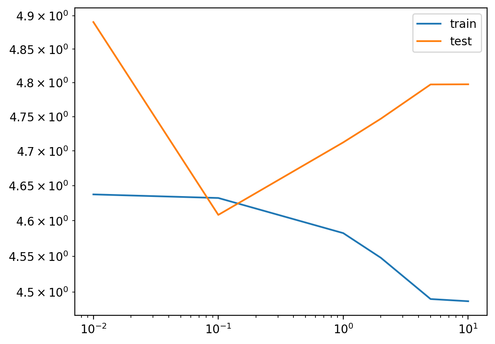
Extrapolation using Gaussian Process
X_norm_train = X_norm[:int(len(X_norm)*0.7)]
X_norm_test = X_norm[int(len(X_norm)*0.7):]
y_norm_train = y_norm[:int(len(y_norm)*0.7)]
y_norm_test = y_norm[int(len(y_norm)*0.7):]
X_train = X[:int(len(X)*0.7)]
X_test = X[int(len(X)*0.7):]
y_train = y[:int(len(y)*0.7)]
y_test = y[int(len(y)*0.7):]plt.plot(X_norm_train, y_norm_train, 'o', label='train',markersize=1)
plt.plot(X_norm_test, y_norm_test, 'o', label='test', ms=3)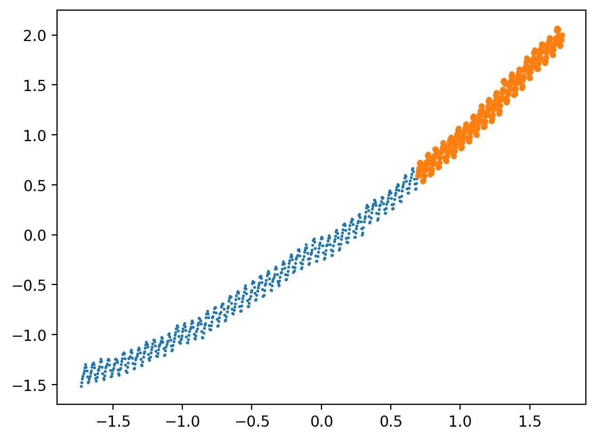
plot_fit_gp(X_norm_train, y_norm_train, X_norm_test, y_norm_test, X_lin_1d, "Gaussian Process Extrapolation Regression")--------------------------------------------------------------------------- NameError Traceback (most recent call last) Input In [235], in <module> ----> 1 plot_fit_gp(X_norm_train, y_norm_train, X_norm_test, y_norm_test, X_lin_1d, "Gaussian Process Extrapolation Regression") NameError: name 'plot_fit_gp' is not defined
Before this…
Dataset 1: Sine wave with noise
# Generate some data
rng = np.random.RandomState(1)
x = 15 * rng.rand(200)
y = np.sin(x) + 0.1 * rng.randn(200)
df = pd.DataFrame({'x': x, 'y': y})
# plot the data
plt.scatter(df.x, df.y)
plt.show()
# Train test split
train = df.sample(frac=0.8, random_state=1)
test = df.drop(train.index)
plt.scatter(train.x, train.y, color='blue', label='train')
plt.scatter(test.x, test.y, color='orange', label='test')
plt.legend()
plt.show()
def plot_predictions(train, test, yhat_train, yhat_test):
# add yhat_train to train and yhat_test to test
train['yhat'] = yhat_train
test['yhat'] = yhat_test
# sort train and test by x
train = train.sort_values(by='x')
test = test.sort_values(by='x')
# Train and test error
train_rmse = np.sqrt(np.mean((train.yhat - train.y)**2))
test_rmse = np.sqrt(np.mean((test.yhat - test.y)**2))
plt.scatter(train.x, train.y, color='blue', label='train')
plt.scatter(test.x, test.y, color='orange', label='test')
plt.plot(train.x, train.yhat, color='red', label='train prediction')
plt.plot(test.x, test.yhat, color='green', label='test prediction')
plt.title('Train RMSE: {:.3f}, Test RMSE: {:.3f}'.format(train_rmse, test_rmse))
plt.legend()
plt.show()
return train_rmse, test_rmse# Hyperparameter tuning using grid search and showing bias variance tradeoff
def hyperparameter_tuning(params, train, test, model):
train_rmse = []
test_rmse = []
for d in params:
yhat_train, yhat_test = model(d, train, test)
train_rmse.append(np.sqrt(np.mean((yhat_train - train.y)**2)))
test_rmse.append(np.sqrt(np.mean((yhat_test - test.y)**2)))
plt.plot(params, train_rmse, label='train')
plt.plot(params, test_rmse, label='test')
plt.xlabel('params')
plt.ylabel('RMSE')
plt.legend()
plt.show()
optimal_param = params[np.argmin(test_rmse)]
return optimal_paramrmse_dict = {}Model 1: MLP
# use sk-learn for MLP
mlp_model = MLPRegressor(hidden_layer_sizes=[128, 256, 512, 256, 128], max_iter = 10000)
mlp_model.fit(np.array(train.x).reshape(-1, 1), train.y)MLPRegressor(hidden_layer_sizes=[128, 256, 512, 256, 128], max_iter=10000)In a Jupyter environment, please rerun this cell to show the HTML representation or trust the notebook.
On GitHub, the HTML representation is unable to render, please try loading this page with nbviewer.org.
MLPRegressor(hidden_layer_sizes=[128, 256, 512, 256, 128], max_iter=10000)
yhat_train = mlp_model.predict(np.array(train.x).reshape(-1, 1))
yhat_test = mlp_model.predict(np.array(test.x).reshape(-1, 1))
train_rmse, test_rmse = plot_predictions(train, test, yhat_train, yhat_test)
rmse_dict['MLP'] = (train_rmse, test_rmse)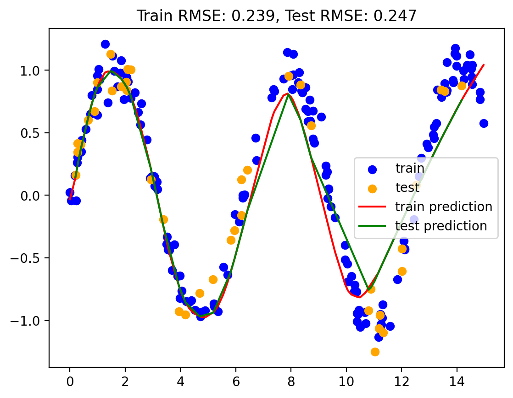
Model 2: Vanilla Linear Regression
lr1 = LinearRegression()
lr1.fit(np.array(train.x).reshape(-1, 1), train.y)LinearRegression()In a Jupyter environment, please rerun this cell to show the HTML representation or trust the notebook.
On GitHub, the HTML representation is unable to render, please try loading this page with nbviewer.org.
LinearRegression()
yhat_train = lr1.predict(np.array(train.x).reshape(-1, 1))
yhat_test = lr1.predict(np.array(test.x).reshape(-1, 1))
train_rmse, test_rmse = plot_predictions(train, test, yhat_train, yhat_test)
rmse_dict['Vanilla LR'] = (train_rmse, test_rmse)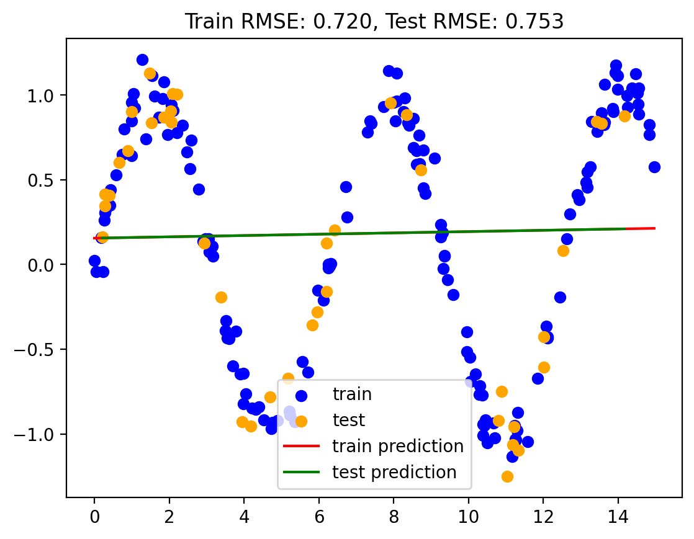
Model 3: Polynomial regression with degree d
def poly_regression(d, train, test):
lr = LinearRegression()
pf = PolynomialFeatures(degree=d)
X_train = pf.fit_transform(train.x.values.reshape(-1, 1))
X_test = pf.fit_transform(test.x.values.reshape(-1, 1))
lr.fit(X_train, train.y)
yhat_train = lr.predict(X_train)
yhat_test = lr.predict(X_test)
return yhat_train, yhat_test# Hyperparameter tuning using grid search and showing bias variance tradeoff
degrees = range(1, 20)
best_degree = hyperparameter_tuning(degrees, train, test, poly_regression)
yhat_train, yhat_test = poly_regression(best_degree, train, test)
train_rmse, test_rmse = plot_predictions(train, test, yhat_train, yhat_test)
rmse_dict['Polynomial Regression'] = (train_rmse, test_rmse)
print("Best degree: ", best_degree)
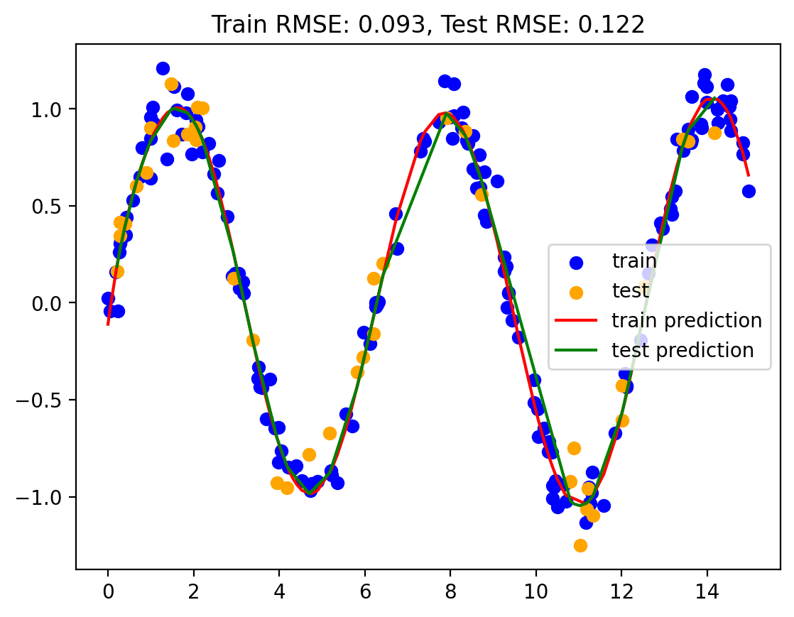
Best degree: 10Model 4: Linear regression with sine and cosine basis functions
def sine_basis_regression(num_basis, train, test):
lr = LinearRegression()
for i in range(1, num_basis+1):
train[f"sine_{i}"] = np.sin(i*train.x)
train[f"cosine_{i}"] = np.cos(i*train.x)
test[f"sine_{i}"] = np.sin(i*test.x)
test[f"cosine_{i}"] = np.cos(i*test.x)
X_train = train.drop(['y'], axis=1)
X_test = test.drop(['y'], axis=1)
lr.fit(X_train, train.y)
yhat_train = lr.predict(X_train)
yhat_test = lr.predict(X_test)
return yhat_train, yhat_testbasis = range(1, 20)
best_num_basis = hyperparameter_tuning(basis, train, test, sine_basis_regression)
yhat_train, yhat_test = sine_basis_regression(best_num_basis, train, test)
train_rmse, test_rmse = plot_predictions(train, test, yhat_train, yhat_test)
rmse_dict['Sine Basis Regression'] = (train_rmse, test_rmse)
print("Best number of basis: ", best_num_basis)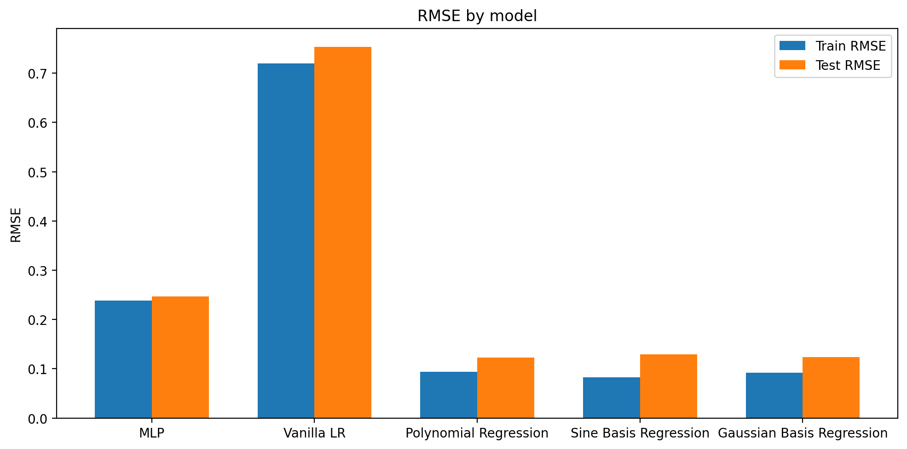
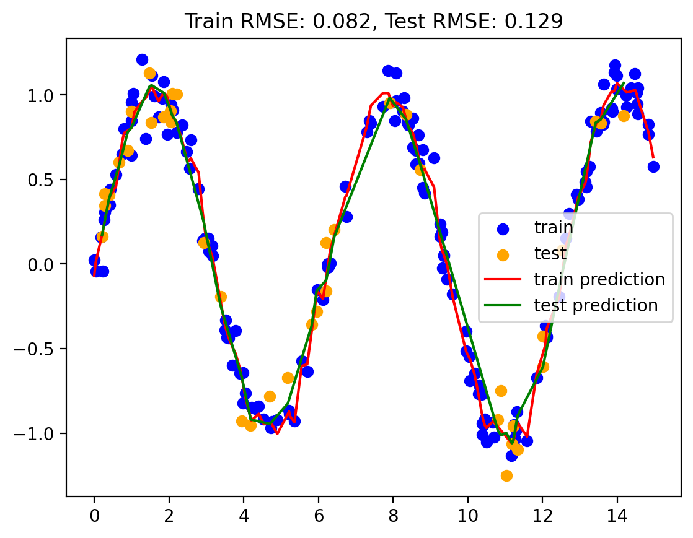
Best number of basis: 14Model 5: Linear regression with Gaussian basis functions
# Source: https://jakevdp.github.io/PythonDataScienceHandbook/05.06-linear-regression.html#Gaussian-basis-functions
class GaussianFeatures(BaseEstimator, TransformerMixin):
"""
Uniformly spaced Gaussian features for one-dimensional input
Constructor with N centers and width_factor as hyperparameters
N comes from the number of basis functions
width_factor is the width of each basis function
"""
def __init__(self, N, width_factor=2.0):
self.N = N
self.width_factor = width_factor
@staticmethod
def _gauss_basis(x, y, width, axis=None):
arg = (x - y) / width
return np.exp(-0.5 * np.sum(arg ** 2, axis))
def fit(self, X, y=None):
# create N centers spread along the data range
self.centers_ = np.linspace(X.min(), X.max(), self.N)
self.width_ = self.width_factor * (self.centers_[1] - self.centers_[0])
return self
def transform(self, X):
return self._gauss_basis(X[:, :, np.newaxis], self.centers_, self.width_, axis=1)# Hyperparameter tuning
basis = range(2, 20)
train_rmse = []
test_rmse = []
for d in basis:
model = make_pipeline(GaussianFeatures(d), LinearRegression())
model.fit(np.array(train.x).reshape(-1, 1), train.y)
yhat_train = model.predict(np.array(train.x).reshape(-1, 1))
yhat_test = model.predict(np.array(test.x).reshape(-1, 1))
train_rmse.append(np.sqrt(np.mean((yhat_train - train.y)**2)))
test_rmse.append(np.sqrt(np.mean((yhat_test - test.y)**2)))
best_num_basis = basis[np.argmin(test_rmse)]
print("Best number of basis: ", best_num_basis)
plt.plot(basis, train_rmse, label='train')
plt.plot(basis, test_rmse, label='test')
plt.xlabel('degree')
plt.ylabel('RMSE')
plt.legend()
plt.show()Best number of basis: 13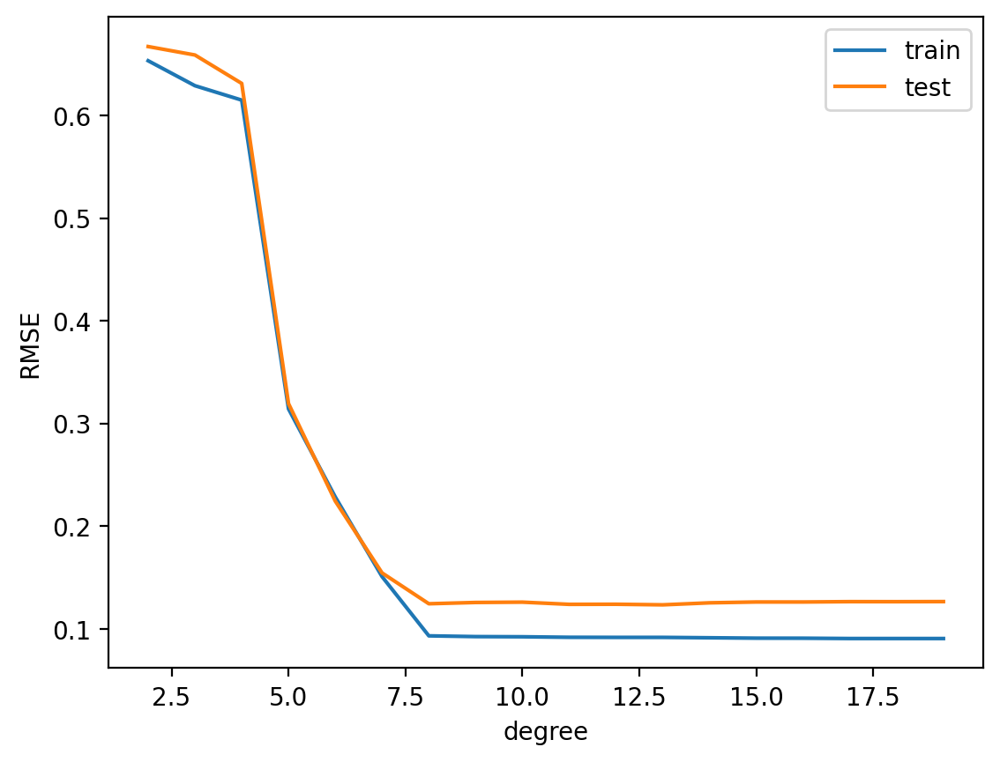
gauss_model = make_pipeline(GaussianFeatures(best_num_basis), LinearRegression())
gauss_model.fit(np.array(train.x).reshape(-1, 1), train.y)
yhat_train = gauss_model.predict(train.x.values.reshape(-1, 1))
yhat_test = gauss_model.predict(test.x.values.reshape(-1, 1))
train_rmse, test_rmse = plot_predictions(train, test, yhat_train, yhat_test)
rmse_dict['Gaussian Basis Regression'] = (train_rmse, test_rmse)
Plotting rmse using different variants of linear regression
# create a bar plot of train and test RMSE
train_rmse = [rmse_dict[key][0] for key in rmse_dict.keys()]
test_rmse = [rmse_dict[key][1] for key in rmse_dict.keys()]
labels = [key for key in rmse_dict.keys()]
x = np.arange(len(labels)) # the label locations
width = 0.35 # the width of the bars
fig, ax = plt.subplots(figsize=(10, 5))
rects1 = ax.bar(x - width/2, train_rmse, width, label='Train RMSE')
rects2 = ax.bar(x + width/2, test_rmse, width, label='Test RMSE')
# Add some text for labels, title and custom x-axis tick labels, etc.
ax.set_ylabel('RMSE')
ax.set_title('RMSE by model')
ax.set_xticks(x)
ax.set_xticklabels(labels)
ax.legend()
fig.tight_layout()
Dataset 2: CO2 Dataset
df| x | y | |
|---|---|---|
| 0 | 6.255330 | -0.020070 |
| 1 | 10.804867 | -0.920032 |
| 2 | 0.001716 | 0.024965 |
| 3 | 4.534989 | -0.916051 |
| 4 | 2.201338 | 0.776696 |
| ... | ... | ... |
| 195 | 13.979581 | 1.115462 |
| 196 | 0.209274 | 0.163526 |
| 197 | 3.515431 | -0.332839 |
| 198 | 9.251675 | 0.161240 |
| 199 | 14.235245 | 0.996049 |
200 rows × 2 columns
df.index = pd.to_datetime(df[['year', 'month']].apply(lambda x: '{}-{}'.format(x[0], x[1]), axis=1))--------------------------------------------------------------------------- KeyError Traceback (most recent call last) /Users/kalash/Documents/Work/Semester_8/ML_TA/ml-teaching/notebooks/basis.ipynb Cell 108 line 1 ----> <a href='vscode-notebook-cell:/Users/kalash/Documents/Work/Semester_8/ML_TA/ml-teaching/notebooks/basis.ipynb#Y425sZmlsZQ%3D%3D?line=0'>1</a> df.index = pd.to_datetime(df[['year', 'month']].apply(lambda x: '{}-{}'.format(x[0], x[1]), axis=1)) File /Library/Frameworks/Python.framework/Versions/3.11/lib/python3.11/site-packages/pandas/core/frame.py:3767, in DataFrame.__getitem__(self, key) 3765 if is_iterator(key): 3766 key = list(key) -> 3767 indexer = self.columns._get_indexer_strict(key, "columns")[1] 3769 # take() does not accept boolean indexers 3770 if getattr(indexer, "dtype", None) == bool: File /Library/Frameworks/Python.framework/Versions/3.11/lib/python3.11/site-packages/pandas/core/indexes/base.py:5876, in Index._get_indexer_strict(self, key, axis_name) 5873 else: 5874 keyarr, indexer, new_indexer = self._reindex_non_unique(keyarr) -> 5876 self._raise_if_missing(keyarr, indexer, axis_name) 5878 keyarr = self.take(indexer) 5879 if isinstance(key, Index): 5880 # GH 42790 - Preserve name from an Index File /Library/Frameworks/Python.framework/Versions/3.11/lib/python3.11/site-packages/pandas/core/indexes/base.py:5935, in Index._raise_if_missing(self, key, indexer, axis_name) 5933 if use_interval_msg: 5934 key = list(key) -> 5935 raise KeyError(f"None of [{key}] are in the [{axis_name}]") 5937 not_found = list(ensure_index(key)[missing_mask.nonzero()[0]].unique()) 5938 raise KeyError(f"{not_found} not in index") KeyError: "None of [Index(['year', 'month'], dtype='object')] are in the [columns]"
df| x | y | |
|---|---|---|
| 0 | 6.255330 | -0.020070 |
| 1 | 10.804867 | -0.920032 |
| 2 | 0.001716 | 0.024965 |
| 3 | 4.534989 | -0.916051 |
| 4 | 2.201338 | 0.776696 |
| ... | ... | ... |
| 195 | 13.979581 | 1.115462 |
| 196 | 0.209274 | 0.163526 |
| 197 | 3.515431 | -0.332839 |
| 198 | 9.251675 | 0.161240 |
| 199 | 14.235245 | 0.996049 |
200 rows × 2 columns
df.average.plot()--------------------------------------------------------------------------- AttributeError Traceback (most recent call last) /var/folders/nf/tcn1v_gx4pvc23db1_jd0_zr0000gq/T/ipykernel_44290/1265214205.py in ?() ----> 1 df.average.plot() /Library/Frameworks/Python.framework/Versions/3.11/lib/python3.11/site-packages/pandas/core/generic.py in ?(self, name) 5985 and name not in self._accessors 5986 and self._info_axis._can_hold_identifiers_and_holds_name(name) 5987 ): 5988 return self[name] -> 5989 return object.__getattribute__(self, name) AttributeError: 'DataFrame' object has no attribute 'average'
train_cutoff = 2000
train = df[df.year < train_cutoff]
test = df[df.year >= train_cutoff]
df.average.plot()
train.average.plot(color='blue')
test.average.plot(color='orange')
len(train), len(test)months_from_start = range(len(df))
months_from_start = np.array(months_from_start).reshape(-1, 1)# use sk-learn for MLP
mlp_model = MLPRegressor(hidden_layer_sizes=[512, 512, 512, 512, 512], max_iter = 5000)
mlp_model.fit(months_from_start[:len(train)], train.average.values)yhat_train = mlp_model.predict(months_from_start[:len(train)])
yhat_test = mlp_model.predict(months_from_start[len(train):])
yhat_train = pd.Series(yhat_train, index=train.index)
yhat_test = pd.Series(yhat_test, index=test.index)
df.average.plot()
yhat_train.plot()
yhat_test.plot()
# Train error
train_rmse = np.sqrt(np.mean((yhat_train - train.average)**2))
test_rmse = np.sqrt(np.mean((yhat_test - test.average)**2))
plt.title('Train RMSE: {:.2f}, Test RMSE: {:.2f}'.format(train_rmse, test_rmse))# normalize data
train_scaled = (train - train.mean()) / train.std()
test_scaled = (test - test.mean()) / test.std()
months_from_start_scaled = (months_from_start - months_from_start.mean()) / months_from_start.std()
# train_scaled = (train - train.mean()) / train.std()
# test_scaled = (test - test.mean()) / test.std()
# months_from_start_scaled = (months_from_start - months_from_start.mean()) / months_from_start.std()
mlp_model = MLPRegressor(hidden_layer_sizes=512, max_iter = 1000)
mlp_model.fit(months_from_start_scaled[:len(train)], train_scaled.average.values)
yhat_train = mlp_model.predict(months_from_start_scaled[:len(train)])
yhat_test = mlp_model.predict(months_from_start_scaled[len(train):])
yhat_train_scaled = pd.Series(yhat_train, index=train.index)
yhat_test_scaled = pd.Series(yhat_test, index=test.index)
yhat_train = yhat_train_scaled * train.std() + train.mean()
# yhat_test = yhat_test_scaled * test.std() + test.mean()
df.average.plot()
yhat_train.plot()
yhat_test.plot()
# Train error
train_rmse = np.sqrt(np.mean((yhat_train - train.average)**2))
test_rmse = np.sqrt(np.mean((yhat_test - test.average)**2))
plt.title('Train RMSE: {:.2f}, Test RMSE: {:.2f}'.format(train_rmse, test_rmse))Model 2: Vanilla Linear Regression
lr1 = LinearRegression()
lr1.fit(months_from_start[:len(train)], train.average.values)
yhat1_test = lr1.predict(months_from_start[len(train):])
yhat1_train = lr1.predict(months_from_start[:len(train)])
yhat_train = pd.Series(yhat1_train, index=train.index)
yhat_test = pd.Series(yhat1_test, index=test.index)
df.average.plot()
yhat_train.plot()
yhat_test.plot()
# Train error
train_rmse = np.sqrt(np.mean((yhat_train - train.average)**2))
test_rmse = np.sqrt(np.mean((yhat_test - test.average)**2))
plt.title('Train RMSE: {:.2f}, Test RMSE: {:.2f}'.format(train_rmse, test_rmse))Model 3: Polynomial regression with degree d
def poly_regression(d, train, test):
months_from_start = range(len(df))
months_from_start = np.array(months_from_start).reshape(-1, 1)
lr = LinearRegression()
pf = PolynomialFeatures(degree=d)
X_train = pf.fit_transform(months_from_start[:len(train)])
X_test = pf.fit_transform(months_from_start[len(train):])
lr.fit(X_train, train.average.values)
yhat_test = lr.predict(X_test)
yhat_train = lr.predict(X_train)
yhat_train = pd.Series(yhat_train, index=train.index)
yhat_test = pd.Series(yhat_test, index=test.index)
df.average.plot()
yhat_train.plot()
yhat_test.plot()
# Train error
train_rmse = np.sqrt(np.mean((yhat_train - train.average)**2))
test_rmse = np.sqrt(np.mean((yhat_test - test.average)**2))
plt.title('Train RMSE: {:.2f}, Test RMSE: {:.2f}'.format(train_rmse, test_rmse))poly_regression(2, train, test)Model 4: Linear Regression with sine and cosine basis functions
### Adding sine and cosine terms
def sine_cosine_features(X, n):
"""
X: array of shape (n_samples, 1)
n: number of sine and cosine features to add
"""
for i in range(1, n+1):
X = np.hstack([X, np.sin(i*X), np.cos(i*X)])
return XX = np.linspace(-1, 1, 100).reshape(-1, 1)_ = plt.plot(X, sine_cosine_features(X, 0))Model 5: Gaussian basis functions
Model 6: Linear Regression with polynomial and sine/cosine basis functions
def poly_sine_cosine_regression(n, train, test):
months_from_start = range(len(df))
months_from_start = np.array(months_from_start).reshape(-1, 1)
lr = LinearRegression()
X_train = sine_cosine_features(months_from_start[:len(train)], n)
X_test = sine_cosine_features(months_from_start[len(train):], n)
print(X_train.shape, X_test.shape)
lr.fit(X_train, train.average.values)
yhat_test = lr.predict(X_test)
yhat_train = lr.predict(X_train)
yhat_train = pd.Series(yhat_train, index=train.index)
yhat_test = pd.Series(yhat_test, index=test.index)
yhat_train.plot(alpha=0.2, lw=4)
yhat_test.plot(alpha=0.2, lw=4)
df.average.plot(color='k', lw=1)
# Train error
train_rmse = np.sqrt(np.mean((yhat_train - train.average)**2))
test_rmse = np.sqrt(np.mean((yhat_test - test.average)**2))
plt.title('Train RMSE: {:.2f}, Test RMSE: {:.2f}'.format(train_rmse, test_rmse))poly_sine_cosine_regression(6, train, test)Model 7: Random Fourier Features
def rff_featurise(X, n_components=100):
# Random Fourier Features
# https://scikit-learn.org/stable/modules/generated/sklearn.kernel_approximation.RBFSampler.html
from sklearn.kernel_approximation import RBFSampler
rbf_feature = RBFSampler(gamma=1, n_components=n_components, random_state=1)
X_features = rbf_feature.fit_transform(X)
return X_featuresdef poly_rff_regression(n, train, test):
months_from_start = range(len(df))
months_from_start = np.array(months_from_start).reshape(-1, 1)
lr = LinearRegression()
X_train = rff_featurise(months_from_start[:len(train)], n)
X_test = rff_featurise(months_from_start[len(train):], n)
print(X_train.shape, X_test.shape)
lr.fit(X_train, train.average.values)
yhat_test = lr.predict(X_test)
yhat_train = lr.predict(X_train)
yhat_train = pd.Series(yhat_train, index=train.index)
yhat_test = pd.Series(yhat_test, index=test.index)
yhat_train.plot(alpha=0.2, lw=4)
yhat_test.plot(alpha=0.2, lw=4)
df.average.plot(color='k', lw=1)
# Train error
train_rmse = np.sqrt(np.mean((yhat_train - train.average)**2))
test_rmse = np.sqrt(np.mean((yhat_test - test.average)**2))
plt.title('Train RMSE: {:.2f}, Test RMSE: {:.2f}'.format(train_rmse, test_rmse))poly_rff_regression(440, train, test)